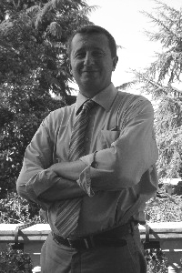

Innovation for businesses and public administrations, from research to practice

Business and Consulting: I support companies by combining scientific and technological
expertise with hands-on experience inside organisations. My work is framed by the main
regulatory references, both voluntary and mandatory (quality, information security, business continuity, environment, data protection,
corporate liability) and has been strengthened through ties with the professional communities of North-Eastern
Italy and through collaboration with the leading training institutions of the region.
Science and Knowledge: my path began with studies in physics and continued with
a PhD on advanced theoretical topics: grand unification theories, quantum gravity, high energy
physics. It then broadened to related disciplines (algebra, chemistry, environmental sciences,
astrophysics) and goes hand in hand with long and wide-ranging experience in computer science,
which is now my main field of work.
Support for Certification and Innovation processes
certification support: setting up and maintaining management systems compliant with
ISO 9001 – Quality Management System (QMS)
ISO/IEC 27001 – Information Security Management System (ISMS)
ISO 22301 – Business Continuity Management System (BCMS)
ISO/IEC 20000-1 – IT Service Management System (SMS)
ISO 14001 – Environmental Management System (EMS)
governance and control:
consulting on IT Governance, key performance indicators (KPIs) and process monitoring
service management based on service level agreements (SLAs)
management system audits according to ISO 19011
training and outreach:
professional training (cybersecurity, quality, environment, IT service management, innovation)
technical and scientific publishing
science communication (physics, astrophysics, cosmology and computer science)
support for mandatory regulatory compliance, particularly in IT:
Italian Digital Administration Code (CAD)
circulars and guidelines of the Agency for Digital Italy (AgID)
guidance and funding calls of the Department for Digital Transformation (DTD)
circulars and guidelines of the National Cybersecurity Agency (ACN)
compliance support for specific IT areas, in particular:
EU NIS2 Directive on the security of network and information systems (Italian Legislative Decree 138/2024)
General Data Protection Regulation (GDPR, Regulation (EU) 2016/679)
Open Source software and related rules: procurement and reuse of software in public administration (Articles 68-69 of the CAD and related AgID guidelines)
artificial intelligence and related rules: Regulation (EU) 2024/1689 (AI Act) and the Italian law on artificial intelligence (Law 132/2025)
support for implementing the PA Digitale 2026, PNRR measures:
Cloud enablement and migration
National Digital Data Platform (PDND)
IO app and pagoPA
Digital Notification Service (SEND)
National Archive of Street Numbers and Urban Streets (ANNCSU)
National Civil Status Archive (ANSC) and SPID / CIE digital identity
public administration websites based on Designers Italia templates
innovation and research:
design and management of innovation projects with regional, national and European funding
Doctor of Philosophy (PhD), doctorate carried out at the University of Padua, degree conferred by the Italian Ministry of University and Scientific and Technological Research, Rome, October 16, 1996;
A quantitative and qualitative study on the ICT gender gap through statistical data, web analysis, official reports, norms and policies, with particular attention to the Veneto Region situation
Emanuela Boschetto, A.C., Agostino Cortesi and Fabio Fignani
Scientific and Professional papers in Information & Communication Tecnology, Quality & Methodology/Environment and Fundamental Physics
How technological innovation can boost growth. From digital, cloud computing & big data, towards Industry 4.0, smart cities, augmented reality, artificial intelligence and beyond (in Italian), A.C., paper in the journal Qualità, N.3, May/June 2019, pp.30-34, ISSN 2037-4186;
Nuclear fusion for energy production: dream or reality? (in Italian), A.C., paper in the newsletter of ALEA (Associazione Laureati in Economia Aziendale), December 2018 issue;
Digital transforms the factory: the next logistics and manufacturing revolution of Industry 4.0 (in Italian), A.C., paper in the newsletter of ALEA (Associazione Laureati in Economia Aziendale), September 2017 issue;
Scenarios of a near future: after computer science, towards robotics, through artificial intelligence and Industry 4.0 (in Italian), A.C., paper in Kaleidos, journal of the Università Popolare di Mestre, N.31, September 2017, pp.12-14;
Porto Marghera after 100 years: where do we stand with the remediation? (in Italian), A.C. and Vera Cantale, paper in the journal Qualità, N.1, January/February 2017, Ambiente & Green Economy special issue, pp.4-7;
Economics, organization and quality. A guided path supported by technical and methodological tools (in Italian), book authored by A.C., pp.1-190, Libreria Universitaria Edizioni, Padua, 2016, ISBN 978-88-6292-765-9;
Measuring digital innovation (in Italian), eBook edited by Elvio Tasso, Antonino Mola, Agostino Cortesi and A.C., pp.1-195, Edizioni Ca’ Foscari, Venice, 2015, ISBN 978-88-97735-89-2;
Requirements Analysis and Technical Specifications, pp.1-73, Indicators, Definitions and First Set, pp.1-71, Design / Technical Annex, pp.1-55 (in Italian), edited by A.C., deliverables D1s, D1i, D1p of 25/2/2014 of the Regional ProjectSmeD, Smart eGovernment Dashboard;
Evaluation and Testing Document (in Italian), pp.1-99, edited by A.C., deliverable D2 of 31/10/2013 of the Regional ProjectSmeD, Smart eGovernment Dashboard;
LHC and Big Science as a model. Mega-networks and pan-European scientific infrastructures: the foundations being laid for the society and economy of the coming years (in Italian), pp.13-65, A.C., contribution in F. Azzariti (ed.), “Connessioni”, Franco Angeli, Milan, 2014;
Analysis and Conclusions regarding Public Authority — Research Infrastructure Interaction. The business models for ICT Research Infrastructures,
A. Hoogerwerf (Ed.), Piet Demeester, Colin Wright, A.C., Alan Mathewson (contributors), deliverable D4.2 due 30/6/2012 of the European Project
FP7-ICT-248295 OSIRIS, Towards an Open and Sustainable ICT Research Infrastructure Strategy, pp.1-39;
Model for Public Authority — Research Infrastructure Interaction. The business models for ICT Research Infrastructures,
A. Hoogerwerf (Ed.), Rosette Vandenbroucke, Piet Demeester, Colin Wright, A.C., Luc De Ridder, Musa Cağlar, Alan Mathewson (contributors), deliverable
D4.1 due 31/3/2012 of the European Project FP7-ICT-248295 OSIRIS, Towards an Open and Sustainable ICT
Research Infrastructure Strategy, pp.1-161;
Report on Interviews and collection of detailed information, A. Mathewson and C. O’Murchu (contributors), P. Deemester, P. Van Daele, R. Vandenbrouck, L. de Ridder, A.C., A. Mathewson, C. O’Murchu, C. Wright,
deliverable D3.3 due 30/6/2012 of the European Project FP7-ICT-248295 OSIRIS,
Towards an Open and Sustainable ICT Research Infrastructure Strategy, pp.1-83;
Mapping of existing PA-RI Cooperations, A.C., deliverable D3.4 due 31/05/2012 of the
European Project FP7-ICT-248295 OSIRIS, Towards an Open and Sustainable ICT Research
Infrastructure Strategy, 195x71 (>10,000) spreadsheet cells of qualitative/quantitative info on RIs;
Inventory of existing PA-RIs cooperation – Update, A.C. and Mirco Mazzucato,
deliverable D3.2 due 30/11/2011 of the European Project FP7-ICT-248295 OSIRIS,
Towards an Open and Sustainable ICT Research Infrastructure Strategy,
Intro, pp.1-9,
Part 1 "Inventory of models", pp.1-75,
Part 2 "Inventory of collaborations", pp.1-138;
Sociality in motion: collection of views and voices from the Miranese and Riviera del Brenta areas, starting from the experience with the j-Step project (in Italian), book edited by A.C. and A. Marella, pp.1-176,
Quaderni dell’Associazione M.A.S.Ter., University of Padua, Cleup, Padua, 2011;
LHC and the Big Science as a model. Mega-networks and pan-European scientific infrastructures:
the building grounds for the society and the economy of the next years (in Italian), A.C., contribution to be published in F. Azzariti (Ed.),
Report del Salone d’Impresa;
Inventory of existing PA-RIs cooperation, A.C. and M. Mazzucato (Eds.), B. Kaškina, G. Ódor,
C. Wright, A. Hoogerwerf, R. Vandenbroucke, F. Cincarevsky (contributors) deliverable D3.1 due 31/12/2010 of the
European Project FP7-ICT-248295 OSIRIS, Towards an Open and Sustainable ICT
Research Infrastructure Strategy, pp.1-53;
Three-layered QoS for eGovernment web services (in Italian), A.C., A. Albarelli and A. Cortesi, third chapter, pp.169-189, in: AA.VV., Processi condivisi e sistemi aperti per un egovernment partecipato – L’esperienza della Regione Veneto nella promozione della società dell’informazione e della conoscenza tra enti locali, imprese, cittadini e territorio, Università “Ca’ Foscari” Editor, Venice, 2010, ISBN 978 88 903433 1 5;
Three-layered QoS for eGovernment Web Services, A.C., A. Albarelli and A. Cortesi, in: P. Agouris,
C. Baru, R. Sandoval, proceedings of the 11th International Conference in Digital Government Research DGO 2010,
ACM digital library, May 17-20, 2010, Puebla, Mexico (conference “Second Best Paper Award”), pp.1-6;
Report on key challenges based on previous studies, B. Martuzāns, B. Kaškina,
K. Sataki, A.C., H. Sverenyák, A. Hoogerwerf, J. Hrušák, J. Tiosavljevičová, M. Çağlar, C. Wright, deliverable D2.1 due 1/4/2010 of the European Project FP7-ICT-248295 OSIRIS,
Towards an Open and Sustainable ICT Research Infrastructure Strategy, pp.1-42;
Business Process Management. BPM/workflow techniques supporting processes in a “flexible” IT model for local public administration (in Italian), A.C., S. Vianello, A. Cortesi, A. Mola, E. Tasso, B. Salomoni, paper in “Qualità”, special issue “Informatica e Qualità. La Società dell’Informazione”, pp.11-17, September/October 2010;
Pollution and health damage. A change in our way of life is urgent (in Italian), A.C., contribution, sixth section, pp.135-165 in: Benatelli, N. (ed.), Quaderno della Consulta per la Tutela della Salute N.5/2009, “Assistenza primaria, welfare di comunità, centralità della persona. Prospettive di sviluppo dei servizi socio sanitari a Venezia”, Municipality of Venice, 2009;
A process-based approach to quality eGovernment – The experiments of the Veneto eGovernment Laboratory to improve the quality of services to citizens (in Italian), A.C., A. Albarelli, A. Cortesi, A. Mola, E. Tasso, B. Salomoni, paper submitted (but not published) to the quality special issue of the Confindustria Trentino periodical, October 2009;
Quality in local eGovernment – Developments of the Veneto eGovernment Laboratory on the quality of public services to citizens (in Italian), A.C., A. Albarelli, A. Cortesi, A. Mola, E. Tasso, B. Salomoni, paper in the journal Qualità, AICQ, Milan, September 2009;
Weak Identities for Deliberative e-Democracy, A.C., A. Albarelli, A. Cortesi, in: Tambouris, E., Macintosh A. (Eds.). Electronic Participation: Proceedings of Ongoing Research, General Development Issues and Projects of ePart 2009, 1st International Conference, Linz, Austria, September 1-3, 2009 Trauner Druck: Linz, Schriftenreihe Informatik # 31, 2009;
From the chlorine cycle to smog. How to protect health – the map of pollution in Venice (in Italian), A.C., chapter in Benatelli, N. (ed.), Quaderno della Consulta per la Tutela della Salute N.1/2008, “Prevenzione e tutela della salute pubblica. Raccomandazioni ed interventi globali contro le malattie degenerative”, Municipality of Venice, 2008;
New ICT models – Web 2.0 and beyond. Web 2.0, semantic web, grid computing, virtualisation … an opportunity for structured enterprises (in Italian), A.C., paper in Qualità, September 2008;
The rebirth of the Marghera community. The path of civic engagement triggered by the chemical emergency (in Italian), contribution in Barizza S. and Cesco L. (eds.), “Marghera 1917-2007. Voci, suoni e luci tra case e fabbriche”, Comunicare & Stampa, Marghera, 2007;
Laboratory Marghera between Venice and North East. Environmental jurisprudence, active citizen participation, remediation and development prospects (in Italian), book authored by N. Benatelli, A.C., G. Favarato, pp.1-159, Nuova Dimensione, Venice, 2006;
Quality and technology for innovation in SMEs: an integrated management model between tools and professional communities (in Italian), book authored by A.C., pp.1-185, FrancoAngeli, Milan, 2006;
Quality in software – Standards in computing and software metrics: an overview (in Italian), paper in Sistemi e Impresa N.1, January/February 2004, pp.87-90;
Anomalies and Effective Supergravity in the Green-Schwarz Heterotic String, A.C., PhD thesis (in Italian), University of Padua; copy deposited at the National Central Library of Florence, March 1994;
Talks and Seminars in Scientific Conferences/Meetings and for Dissemination
Innovation and technology: current scenarios and the role of the Public Administration, testimony as stakeholder at the online meeting Costruire le competenze del futuro promoted by the Master's Degree in Government Sciences and Public Policies, Padua University, September 30th, 2026;
Digitalization, innovation and security in the Public Administration, testimony at the course Scienze del governo e politiche pubbliche, Department of Political Science, Law and International Studies (SPGI), Padua University, January 8th, 2026, Padua;
The evolution of the European ‘engine’: paths for companies in a moving scenario, talk at the event Una bussola per navigare nel cambiamento: rischi e opportunità organized by the Italian Association for Quality Culture (AICQ) Triveneta together with the Order of Engineers of the Province of Padua, November 18th, 2025, Limena (Padua);
Astronomy and Cosmology in the Renaissance, scientific talk at the event Le (Ri)forme dei Rinascimenti, Second Edition of the Festival dei Rinascimenti. Dal Passato al Futuro: Società, Cultura, Innovazione, October 18th, 2025, Treviso;
Digitalization, innovation and security in the Public Administration, testimony at the interregional 2nd level Master PISIAInnovazione, progettazione e valutazione delle politiche e dei servizi, SPGI Department, Padua University, June 6th, 2025, Padua;
From Copernicus to the James Webb Space Telescope, scientific talk at the event Festival dei Rinascimenti. Dal Passato al Futuro: Società, Cultura, Innovazione, September 14th, 2024, Treviso;
Digitalization, innovation and security in the Public Administration, testimony at the interregional 2nd level Master PISIAInnovazione, progettazione e valutazione delle politiche e dei servizi, SPGI Department, Padua University, May 24th and December 20th, 2024, Padua;
Digitalization, innovation and security in the Public Administration, testimony at the interregional 2nd level Master PISIAInnovazione, progettazione e valutazione delle politiche e dei servizi, SPGI Department, Padua University, November 28th, 2023, Padua;
Digitalization, innovation and security in the Public Administration, testimony at the interregional 2nd level Master PISIAInnovazione, progettazione e valutazione delle politiche e dei servizi, SPGI Department, Padua University, December 22nd, 2022, Padua;
Development of Digital Skills for the Public Administration, coordination of the yearly regional “peer-to-peer” training program for the local authorities of the Veneto Region, iterations 2021/22, 2020/21, 2019/20, 2018/19 and 2017/18, structured in about twenty groups (GdA), monthly thematic meetings (IdA & webinars) and co-design labs, topics: Digital Administration Code, Citizen Services, Cybersecurity, SPID & eIDAS, Open Source, Privacy & GDPR, ICT Procurement, Geographic Information Systems, Administrative Transparency, Digital Payments, Digital Preservation, Mobility, Social Services, Service Design, Public Relations Offices and Accessibility, Open & Big Data, PSN & Cloud Computing;
Design, planning and coordination of about 50 meetings at the Veneto Innovation Labs for a training path for local PA operators on the PagoPA payment systems, November/December 2021;
From the digital public services of local authorities to the digital rights of citizens: distributed co-design lab, coordination and management of the Lab (5 working tables), June 24th, 2021;
Co-Design Lab on Software Reuse, coordination and management of the Lab (6 working tables), March 28th, 2021;
Co-design Lab on the Guidelines for the Three-Year ICT Plan for the PA 2020-2022, coordination and management of the Lab (11 working tables), January 13th, 2021;
Results of the 2019-20 Campaign and 2020-21 Program for the Development of Digital Skills, talk at the event Veneto eLeadership 2020, June 10th/11th/12th, 2020 (remote/webinar), and management/conduction of the Lab;
The Three-Year ICT Plan for the PA 2019-2021 from the local PA point of view, support to the working tables, September 12th, 2019, Challenge School / Vega, Venice;
Experiences in implementing Geographic Information Systems: comments and reflections, chairing of the round table at the event Sistemi Informativi Territoriali e Open Data, April 11th, 2019, Municipality of Belluno;
Results of the 2018-19 Campaign and 2019-20 Program, talk at the eventVeneto eLeadership 2019 per lo sviluppo delle competenze digitali nella PA, March 28th, 2019, SMAU Padua;
Cybersecurity in the PA, chairing of the round table at the event Cybersecurity e Risk Management, February 15th, 2019, Municipality of Padua;
Concrete experiences of the dematerialization process in local authorities, chairing of the round table at the event Dematerializzazione: come gestire un sistema 100% digitale. Le problematiche di conservazione a norma e di archiviazione digitale, December 6th, 2018, Municipality of Verona;
Experiences in implementing GIS: comments and reflections, chairing of the round table at the event Il database territoriale: da obbligo ad opportunità, November 15th, 2018, Municipality of Vicenza;
Chairing of the debate at the event Applicazione Codice Appalti ed Acquisti ICT: prossimi adempimenti, October 25th, 2018, Municipality of Padua;
The Digital Transition Manager: comparing experiences, chairing of the round table at the event Il ruolo del Responsabile per la Transizione Digitale (RTD): basi normative / programmatiche (CAD & Piano Triennale) ed esperienze concrete, October 12th, 2018, Province of Treviso;
Business Economics and Organization, university teaching at the third year of the Degree in Graphic and Multimedia Communication Sciences and Techniques, 5 credits (40 hours), first semester, IUSVE–STC, academic years 2018/19, 2017/18, 2016/17, 2015/16, 2014/15;
Innovative Services Lab: Economy 4.0, cycle of lectures (24 hours in total) for the Department of Political Science, Law and International Studies, Padua University, at Confartigianato Vicenza, April 23rd, May 2nd and May 8th, 2018;
Bar Camp: Economy and technological innovation. Digital Transformation, smart systems, cloud computing and big data, 4 hours seminar for the Salesian University Institute of Venice (IUSVE), April 5th, 2018;
Co-supervisor of the IUSVE-STC thesis Il neuromarketing e la nascita di nuove esperienze d’acquisto grazie alla realtà aumentata e virtuale by M.C. Zanella, March 21st, 2018;
Supervisor of the IUSVE-STC thesis Scenari evolutivi della comunicazione connessi all’evoluzione di nuove interfacce bio-sensoriali by M. Brunato, March 21st, 2018;
GDPR compliance experiences: comments and reflections, chairing of the round table at the event Regolamento Europeo sulla Privacy: novità, aspetti critici, proposte e soluzioni, January 19th, 2018, Palazzo della Regione, Veneto Region;
Cloud Computing, facilitation of the working table at the workshop of the PA (R)EVOLUTION project, December 21st, 2017, CUOA Business School, Altavilla Vicentina, Vicenza;
SPID integration paths: which challenges to face?, chairing of the round table at the event SPID e Identità Digitale, December 7th, 2017, Sala Verde, Municipality of Treviso;
The minimum ICT security measures established by AgID and the security measures for data protection, talk at the Kairós seminar Il nuovo regolamento europeo in materia di protezione dei dati personali e gli obblighi per le amministrazioni pubbliche, December 1st, 2017, Chamber of Commerce Conference Center, Padua;
Cybersecurity management experiences in local authorities, chairing of the round table at the event Aggiornamenti sul quadro normativo relativo alla Sicurezza Informatica per la Pubblica Amministrazione, October 19th, 2017, Palazzo Moroni, Municipality of Padua;
Supervisor of the IUSVE-STC thesis Elon Musk: dai videogame a Marte. Un caso esemplare di sinergia tra innovazione, comunicazione ed economia by A. Fantin, October 12th, 2017;
The Three-Year ICT Plan for the PA 2017-2019 in brief, talk at the events Codice Amministrazione Digitale a fronte del nuovo Piano Triennale per l'Informatica nella PA, Vicenza, July 5th, 2017 (seminar session) and September 21st, 2017 (public session);
The challenge of new digital skills for the local PA, talk at the event Veneto e-Leadership per lo sviluppo delle competenze digitali nella PA, Palazzo della Regione, May 11th, 2017;
Supervisor of the IUSVE-STC thesis Comunicazione istituzionale d’impresa, comunicazione economico-finanziaria e comunicazione aziendale: viaggio tra le diverse dimensioni della comunicazione nella prospettiva economica by G. Gabrieli, January 11th, 2017;
Co-supervisor of the IUSVE-STC thesis Comunicazione politica 3.0: evoluzione e rivoluzione social by F. Salomon, January 11th, 2017;
Economy, Innovation and Technology, IUSVE Focus, university seminar sessions with students: Economy and tailor-made manufacturing, November 16th, 2016; Economy and sustainable technology, November 23rd, 2016; Economy, services and Industry 4.0, November 30th, 2016, involving nine experts in three sessions;
Supervisor of the IUSVE-STC thesis Alimentazione, comunicazione e impatto sanitario-ambientale: come la nutrizione e gli stili di vita sono cambiati attraverso l’informazione by R. Spinoso, March 15th, 2016;
Women and Information Technologies: a quantitative and qualitative study of the ICT gender gap through statistical data, web analysis, official reports, norms and policies, with a focus on the Veneto Region (in Italian), book presentations: May 28th, 2013, ForumPA, Rome; May 29th, 2012, Ca’ Foscari, Aula Baratto, Venice;
Stars & Planets, disssemination talk at the Primary School "Mario Licio Visintini", Marghera-Venice, May 14th, 2012;
OSIRIS Brief introduction – Understanding RIs – Open and sustainable ICT RIs strategy – Results up to present, scientific talk at the Impact of e-Infrastructures: Assessment Methodologies Session during EGI Community Forum, Munich, Germany, March 29th, 2012;
OSIRIS Presentation, participation and discussion as OSIRIS partner at the Research Infrastructures Concertation Meeting, September 22th-23th, 2011, Lyon, France;
KPI-Supported PDCA Model for Innovation Policy Management in Local Government, scientific talk at the International Conference EGOV2011, August 29th - September 2nd, 2011, Delft, The Netherlands;
Open Source Tools for eGovernment, scientific presentation at the Environmental, Computing and Statistical Science Department, University "Ca' Foscari" of Venice, talk series “OS as a development framework for charity applications”, April 20th, 2011;
ICT Research Infrastructures: Interviews, organization and participation to the OSIRIS European Interviews Meetings: August 25th, 2011, Leuven, Belgium (IMEC); September 19th, 2011, Lyon, France (EGI); September 29th, 2011, Amsterdam, The Netherlands (LIFEWATCH); October 6th, 2011, Cambridge, UK (Dante/Géant); November 30th, 2011, Grenoble, France (Minatec-CEA/LETI);
OSIRIS European Project Meetings: organization and participation as OSIRIS WP3 “Benchmarking” Leader: April 26th-27th, 2010, The Hague, The Netherlands; September 30th, 2010, Bruxelles, Belgium; February 10th/11th, 2011, Prague, Czech Republic; April 7th/8th, 2011, Leuven, Belgium; April 27th/28th, 2011, Brugge, Belgium; May 27th, 2011, Bruxelles, Belgium; October 17th, 2011, Bruxelles, Belgium; December 13th/14th, 2011, Bruxelles, Belgium; February 20th/21th, 2012, Bruxelles, Belgium; April 3rd/4th, 2012, Padova, Italy; April 18th/19th, 2012, Bruxelles, Belgium; May 31th/June 1st, 2012, Bruxelles, Belgium;
Information Technologies for the Public Administrations. The "eGovernment Intelligence" Project, scientific talk at the Conferenza Provinciale Permanente. Seminario per la presentazione progetti di Innovazione e qualità dei Servizi, Prefettura di Belluno, Novembre 18th, 2010;
PA & OpenSource. Research Projects, scientific talk at the workshop "PA & Open Source: un percorso tra opportunità ed innovazione, Parco Scientifico VEGA, Marghera, Venezia, 11/11/2010;
eGovernment Intelligence, scientific talk at the Conferenza Provinciale Permanente. Prefettura di Belluno, 15/10/2010;
Perspectives – Green Economy, scientific talk at the Conference “Diritto ed Economia Verde – Globalizzazione e prospettive territoriali: incontro con gli stakeholders per approfondire e capire”, Rovigo, 15/7/2010, Villa Molin Avezzù Pignatelli;
LHC an the Big Science as a model: Mega-Networks and Pan-European Research Infrastructures: the building grounds for the society and economy of the next years, opening scientific talk of the VIII Salone d'Impresa, 25/06/2010, Mestre-Venezia;
Marghera 2009 after the industrialisation, talk to present the book (as co-author), Biblioteca di Marghera, 9/10/2009;
Weak Identities for Deliberative e-Democracy, scientific talk, Electronic Participation: Proceedings of Ongoing Research, General Development Issues and Projects of ePart 2009, 1st International Conference, ePart 2009, Linz, Austria, September 1-3, 2009;
New industry perspectives emerging from the EGI model, scientific talk at the EGEE User Forum + OGF25 + OGF.EU2, “Le Ciminiere” center, Catania, March 5th 2009;
Physics II (electromagnetism), teaching and exercises for the First Level Degree in Mathematics, academic year 2008-2009 (3,00 credits), University of Padua;
Environment and Health in Venice, Mestre and Marghera, scientific presentation at the III Commission of the Municipal Council of Venice, 20/05/2009;
Environment and Health in Venice, Mestre and Marghera, teaching lesson, Aula Magna, ITIS Zuccante, as Expert on behalf of the Ufficio Programmazione Sanitaria del Comune di Venezia, 6/04/2009;
Environment and Health in Venice, Mestre and Marghera, teaching lesson, Aula Magna, Istituto Stefanini, as Expert on behalf of the Ufficio Programmazione Sanitaria del Comune di Venezia, 23/04/2009;
Environment and Health: Recent Developments in Europe, teaching lesson at the Advanced Training Program “Air Quality and Health” Ambiente/SICP - BMEPB 3, Venice International University (VIU), S. Servolo, Venice, 21/11/2008;
The map of the venetian pollution, dissemination talk at the Citisens' Forum: Which Health in Venice?, Venice Hall, 20/11/2008;
eGovernment 2.0, scientific talk at the Lunch Seminar of the Computing Science Department, Università “Ca’ Foscari” di Venezia, 25/06/2008;
Marghera: a development model in discussion, a laboratory to experiment new paths, teaching lesson at the Master interateneo 2008 "Regulation of local development", 6/06/2008, Università di Padova;
From web 1.0 to web 3.0 passing through web 2.0 … The eGovernment laboratory research projects, scientific talk at the project kick-off meeting, Università/Regione Veneto “Laboratory for the management and the development of local area eGovernment portals”, Computing Science Department, Università “Ca’ Foscari” di Venezia, 29/02/2008;
Marghera: Evolution or Involution? An (unsustainable) development model to be improved, a laboratory to redesign the future of the Venice area, teaching lesson, Liceo Scientifico Statale “U. Morin”, Mestre (Ve), 25/02/2008;
From the World Wide Web to the Great Global Grid: cheaper, secure and scalable computing resources with the shared computing grids, dissemination talk at: “Grid Computing, innovative solutions for the SMEs”, BEinGRID/Sogea, Fornace di Asolo (Tv), 22/02/2008;
The participated technological system (Sistema TEcnologico Partecipato, S.TE.P.) for the information, collaboration and the communication of young citisens of the Riviera del Brenta and Miranese areas, introduction to the project at the kick-off meeting, town hall, Camponogara Municipality (Venice area), 7/02/2008;
EGI Industry Take Up, scientific talk at the “European Grid Initiative WP3 Meeting”, Cern/Géneva (Switzerland), 31/01/2008;
The Caos: randomness transition of a deterministic system, scientific talk as introduction of the IV Salone d’Impresa “The Caos: a new rule for the market”, Villa Foscarini Rossi, Stra (Venice), 31/03-1/04/2006;
The Universe in a Box: brief history of the Universe (A.C.) and Cosmic Kaleidoscopes (Gianpietro Favaro), dissemination talk for the Circolo Astrofili di Mestre, 30/03/2006;
Biostructures, crystals, nanostructures and symmetries of the Nature, dissemination talk for the Circolo Astrofili di Mestre, 27/01/2006;
1st edition of the National Price for Corporate Social Responsibility, component of the scientific commission of the Padua University in support of the Institutional Jury, Rovigo, 13/12/2005.
Universe in a nutshell": a freely reading of the di Hawking's book, dissemination talk for the Circolo Astrofili di Mestre, 13/01/2004;
Real world software maintenance Reengineering experiences, contribution to the discussion, 6th Reengineering Forum, Palazzo degli Affari, Firenze, 8-11/03/1998;
Binary-Oscillatory Networks: Bridging a Gap between Experimental and Abstract Modeling of Neural Networks, scientific talk at the Journal Club, International School for Advanced Studies (SISSA/ISAS), Biophysics Sector, Trieste, 18/06/1996.
C++ Programming Course in the Windows/Visual C++ Environment, teching lessons at the six-months Course for PhD students, International School for Advanced Studies (SISSA/ISAS), Biophysics Sector, Trieste, March – July 1996;
WBase: a C package to reduce tensor products of Lie algebra representations. Description and new developments, scientific talk, Fourth International Workshop on Software Engineering and Artificial Intelligence for High Energy and Nuclear Physics (AIHEP), Palazzo Congressi, Pisa, 3-8/04/1995;
Time Travel, scientific talk at the Journal Club of the Physics Department, Padua University, April 7th, 1993;
Duality and Supersimmetry in Ten Dimensions, scientific talk at the National Workshop of Theoretical Physics, “Cortona '93”, Cortona, June 9th-12th, 1993.
Talks at Business Workshops and Professional Teaching
The strategic model of the PA information system: physical infrastructures, preservation and security, professional teaching of 16 hours (4 sessions of 4) for Ente Formazione Artigiana, for the Municipalities of Abano, Torreglia and Teolo, at the Municipality of Abano, April 5th and 24th, May 10th and 21st, 2018;
Big Data, Economy 4.0 and Service management, professional teaching of 28 hours (seven sessions of 4) in the course “Industria 4.0” for ECIPA, for managers and employees of CNA Venice (6/4/2018), Padua (18/1/2018, 26/1/2018, 28/3/2018), Treviso (23/2/2018), Vicenza (2/3/2018) and Rovigo (27/4/2018);
Open Data and Big Data, professional teaching of 96 hours (12 sessions of 8) in the course “PA (R)EVOLUTION” for CUOA Business School, for municipal managers and employees, at: CUOA, Altavilla Vicentina (23/1/2018, 29/1/2018, 31/1/2018, 6/2/2018), Municipality of Bassano (12/2/2018, 19/2/2018), Municipality of Schio (22/2/2018, 1/3/2018), Municipality of Padua (27/2/2018, 8/3/2018), Municipality of Verona (7/3/2018, 15/3/2018);
Open Data and Big Data, professional teaching of 48 hours (6 sessions of 8) for the Chambers of Commerce (Venice/Rovigo, Padua, Verona) in the course “CAMERE 4.0” for CUOA Business School: Chamber of Commerce of Venice and Rovigo (7/2/2018, 5/3/2018), Chamber of Commerce of Padua (+ Vicenza, 28/2/2018, 13/3/2018), Chamber of Commerce of Verona (6/3/2018, 20/3/2018);
Business organization & processes, professional teaching for the Istituto San Gaetano, Vicenza, 40 hours over the school years 2013/14, 2014/15, 2015/16;
Totems! Meet business working together University & Research, talk and discussion at the Salone delle MICROImprese, November 30th, 2013, Palazzo della Borsa, Venice;
The conscious experience of the Marghera citizen community, testimony at the event “Il danno ambientale: soggetti, vittime e normative – Dark Economy a Nordest”, May 9th, 2013, IUAV, Ca’ Tron, Venice;
Digital innovation: ICT supporting business, talk at the event “Cloud Computing”, April 19th, 2013, UNISEF, Auditorium Cassamarca, Treviso;
Socialità in movimento: collezione di prospettive e voci dal territorio del Miranese e della Riviera del Brenta a partire dall’esperienza progettuale J-Step, roadshow di presentazione del testo, 24 Maggio 2012, Comune di Camponogara, 25 Maggio 2012, Comune di Venezia, Municipio di Mestre, 7 giugno 2012, Comune di Noale, 15 giugno 2012, Apindustria Padova;
UFC #11 – Metodologia di sviluppo ed elementi di UML, docenza professionale (32 ore) nell’ambito del corso FSE “Java and Mobile Developer”, Marghera, maggio – luglio 2011;
Cloud Computing, l’internet integrata del calcolo, presentazione e discussione al convegno Cloud Computing: la nuvola dell’informatica del nuovo millennio, Padova, 10 novembre 2010;
Sviluppo, collaudo, installazione e configurazione del software, docenza professionale UFC di 50 ore nell’ambito del percorso IFTS con certificazione di IV livello europeo per “Tecnico superiore per lo sviluppo del software finalizzato alla valorizzazione e promozione turistica, culturale ed ambientale del territorio”, itis C. Zuccante, Mestre, ottobre-novembre 2010;
Web 2.0 per il Distretto SportSystem, presentazione per gli associate del distretto, Museo dello Scarpone, Montebelluna (Tv), 2/11/2009;
Dal web 2.0 al web 3.0. Sistemi collaborativi, web semantico, ontologie …, presentazione e discussione al Salone d’Impresa, Stra (Venezia), 5 maggio 2008;
Grid Computing, presentazione e discussione al Cenacolo per IT Manager, Salone d’Impresa, Sheraton Hotel, Padova, venerdì 25 gennaio 2008;
Budget di commessa e tipologia di prodotto/servizio, docenza professionale per Kantea, c/o Logo Srl, Borgoricco (Pd), 11, 12, 13, 18, 20 dicembre 2007;
La qualità e i sistemi informativi nell’evoluzione delle imprese, presentazione e discussione, in “Le imprese che imparano nel caos del mercato”, Apindustria Padova, sabato 17 novembre 2007, Hotel Villa Giulietta, Fiesso d’Artico (Ve);
Project Management e strumenti IT, docenza professionale per Kantea, c/o Logo Srl, Borgoricco (Pd), 18, 25/9, 9, 16, 23/10 2007;
Marketing per le Energie Rinnovabili, docenza professionale per Cesar, c/o Borsato Impianti Srl, Schio (Vi), 6, 7, 10, 12 settembre 2007;
Marghera tra comunità urbana e sito industriale: un laboratorio di innovazione democratica, presentazione e successiva tavola rotonda, alla Summer School “Per un progetto di sviluppo glocale, scenari evolutivi sostenibili”, associazione M.A.S.TER, nell’ambito del Master in regolazione politica dello sviluppo locale, Università di Padova, 13 settembre 2007, Torreglia (Pd);
Caso Studio: Porto Marghera, lezione al Master in “Regolazione politica dello sviluppo locale”, venerdì 25 maggio, Scienze Politiche, Università di Padova;
Pianificazione e gestione della produzione: la commessa e i suoi elementi costitutivi, il prodotto, il servizio, il processo, due giornate di docenza professionale nell’ambito del corso FSE 002, Kantea, c/o Centro di Formazione Professionale “Pia Società San Gaetano”, Vicenza, 3 aprile e 18 maggio 2007;
La tecnologia al potere? Come si cresce innovando efficacemente, attività di “discussant” al Quinto Salone d’Impresa, 29 marzo 2007, Villa Foscarini Rossi, Stra (Ve);
Un Sistema Informatico per la somministrazione multicanale di questionari nella PA: eGovernment Inquiry Framework, presentazione al Workshop “Citizens iTV: stato avanzamento delle attività e sviluppi futuri”, 15 dicembre 2006, San Servolo c/o Venice University – Regione Veneto;
Laboratorio Marghera, testimonianza sull’esperienza sociale di Marghera sui temi ambientali, in “Decrescita per il Veneto, un’idea per creare una nuova convivenza e tutelare beni comuni e democrazia“, 18 dicembre 2006, Mestre, Auditorium Provincia di Venezia;
Il Caos? E’ la nuova regola di mercato!, partecipazione alla tavola rotonda nel “Cenacolo per Imprenditori”, Salone d’Impresa, Ristorante all’Amelia, Venerdì 9 febbraio 2007;
Laboratorio Marghera tra Venezia e il Nord Est, ciclo di eventi di presentazione del libro: Mestre, Centro Santa Maria Le Grazie, 15 dicembre 2006; Venezia, Libreria Mondadori, 3 marzo 2007, Televenezia, 10 maggio 2007; Padova, Scienze Politiche, 25 maggio 2007;
Strumenti di gestione e tecnologie informatiche per l’Impresa, ciclo di eventi di presentazione del libro “Qualità e tecnologie informatiche per l’innovazione nelle PMI”: Padova, Dipartimento di Scienze Economiche “M. Fanno”, 18 Ottobre 2006; Roma, Camera di Commercio, 17 novembre 2006, Venezia-Mestre, Dipartimento di Scienze Informatiche, 20 dicembre 2006; Vicenza, Associazione Artigiani, martedì 16 gennaio 2007; Venezia – Mestre, Alea / Unindustria Venezia, 10 Marzo 2007; Treviso, Club Bit / Unindustria Treviso, giovedì 22 Marzo 2007; Consorzio Università Rovigo, venerdì 1 Giugno 2007;
IT e Processi: Strumenti di Innovazione per le PMI Da una collezione di apparati ad un sistema integrato per la crescita delle imprese, presentazione al “Cenacolo IT”, Salone d’Impresa, venerdì 24 novembre 2006, Sheraton Padova Hotel & Conference Center;
Il ciclo di sviluppo del nuovo prodotto, sette giornate di docenza professionale nell’ambito del corso FSE 020 “Addetto al processo di sviluppo nuovo prodotto nella filiera del freddo” organizzato dall’Associazione del Freddo e del Condizionamento Aria (AFCA) / Forema, – Padova, 3, 6, 9, 11, 19, 24/25, 26 Ottobre 2006;
Innovazione tecnologica e percorsi di condivisione comune nelle scelte energetiche, presentazione e discussione con i Sindaci delle Comunità Montane promosso da ACSM Spa, Fiera di Primiero, 10 ottobre 2006;
Il Caos: transizione alla casualità di un sistema deterministico, b>presentazione di apertura del IV Salone d’Impresa “Il Caos: nuova regola di mercato”, Villa Foscarini Rossi, Stra (Venezia), 31 marzo / 1 aprile 2006;
Premio Nazionale per la Responsabilità Sociale delle Imprese, componente della commissione scientifica dell’Università di Padova attiva a supporto della giuria istituzionale, (13 Dicembre 2005, Città di Rovigo, con il patrocinio di Ministero del Lavoro e della Regione Veneto ed in collaborazione con la Camera di Commercio di Rovigo);
Sistemi Integrati Ambiente - Sicurezza, tre giornate di docenza professionale nell’ambito del corso FSE 039 “Ecomanager” organizzato da Pro.Forma srl – Marghera, 9, 10 e 15 giugno 2005;
Le norme Iso 9000:2000; Gestione Sistema Qualità, due mezze giornate di docenza professionale per l’Università di Padova, Facoltà di Scienze Politiche nell’ambito del modulo “Sistema Azienda” del corso FSE “Gestione, amministrazione ed internazionalizzazione delle imprese” – Sede di Rovigo, 9 marzo 2005 e 16 marzo 2005;
Sistemi di gestione per la qualità, giornata di docenza professionale nell’ambito del corso FSE 016 “Sistemi digitali per architettura ed arredamento” organizzato da Forema – Unindustria Padova, Padova, 9 novembre 2004;
Sistemi di gestione per la qualità, giornata di docenza professionale nell’ambito del corso FSE 003 “Manager per la logistica d’impresa” organizzato da Forema – Unindustria Padova, Padova, 27 ottobre 2004;
Certificazione Vision 2000, presentazione al II Sales Meeting 2004, Met Sogeda Spa, Eurocongressi Hotel, Cavajon Veronese (VR), 23 luglio 2004;
Il Bilancio delle Competenze, giornata di docenza professionale nell’ambito del corso FSE “Sistemista di rete Windows 2000 e Linux” organizzato da ISFID, Marghera (VE), 21 luglio 2004;
Il Quality Manager nelle imprese di informatica, lezione/testimonianza agli studenti del corso di laurea in informatica nell’ambito dei “seminari professionalizzanti 2004” promossi dal dipartimento di informatica, 25 maggio 2004;
La misura nel software, presentazione e discussione al convegno “Iso/Iec 90003, guida per l’applicazione dei Sistemi di Gestione Qualità alle aziende di software” organizzato dall’Associazione Italiana Cultura Qualità, Holiday Inn, Marghera(Ve), 6 novembre 2003;
Rapporto di Valutazione Esterna quale componente del comitato di indirizzo, Dipartimento di Informatica - Corso di Laurea in Informatica, Facoltà di Scienze MM.FF.NN., Università di Cà Foscari, all’interno del II Rapporto di Autovalutazione del Corso di Laurea in Informatica – Progetto CampusOne – incontri: 9 maggio 2003, 19 novembre 2003, 17 giugno 2004;
Modulo Qualità, due giornate di docenza professionale, Mestre (Ve), 17 novembre 2003 e 26 novembre 2003, per il Centro Ricerche Trasporti Analisi e Mobilità - CERTAM nell’ambito del corso FSE “Operatore per aziende di logistica intermodale”;
Qualità nei processi e-business, giornata di docenza professionale, 24 ottobre 2003, Centro Universitario di Organizzazione Aziendale – CUOA, nell’ambito del corso FSE “Analista di processi e-Business”;
Tecniche di analisi dei processi: esempi nelle aree vendita ed acquisti, docenza professionale, Treviso Tecnologie, 21 ottobre 2003.